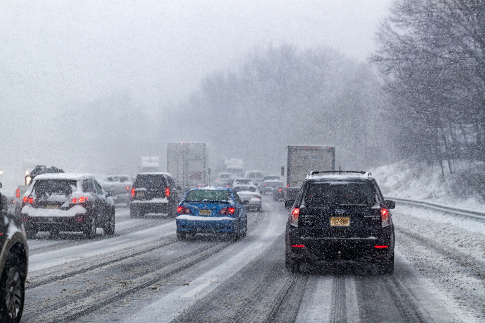

Bavarians presented the BMW XM Concept: a pre-production version of the top crossover
The Bavarians have declassified a large sports crossover BMW XM, the production version of which should appear on the market by the end of 2022. It is noteworthy that this will be only the second model from the M-division (after M1), which has no civilian counterpart. In addition, it will be the first hybrid from the M division, and a single powerplant will be offered for this SUV. There are few details about it yet, but it is known that a gasoline turbocharged V8 paired with an electric motor will produce a total of 750 hp and 1,000 Nm of torque.
"Explosive cyclone". On the East coast of the USA - the heaviest snowfall in four years

On the East coast of the United States on Saturday, a snow storm hit, which is considered the strongest in the last four years. The Meteorological Bureau reported the onset of the so-called "explosive cyclone", when there is a sharp drop in pressure, accompanied by strong winds and heavy precipitation. There is also a possibility that due to the low temperature in Florida, iguana lizards will start falling from trees.
A state of emergency was declared in the states of New York, New Jersey, Maryland, Rhode Island and Virginia, a few hours before they were hit by heavy snowfall and hurricane-force winds.
In coastal areas, authorities warn of possible floods. Almost 6 thousand domestic flights scheduled for the weekend were canceled.
A Michigan resident won $1 billion in the lottery
This is one of the largest jackpots played in the USA, the winning ticket was sold in Michigan. The odds of winning were 1 in 302.5 million.
A ticket with a winning combination of numbers for one of the largest Mega Millions lottery jackpots has been sold in Michigan, according to the lottery website. His buyer won $1 billion.
Australia has opened for foreign tourists

Australia's borders, which have been locked up for almost two years due to the pandemic, opened on Monday, and Sydney Airport expects about 20 international flights by the end of the day, ABC TV channel reports.
The country allows entry to fully vaccinated against coronavirus holders of valid Australian visas.и
A powerful flash occurred on the far side of the Sun's surface

The flare occurred on February 10, after a giant coronal mass ejection, solar particles spread millions of kilometers into outer space.